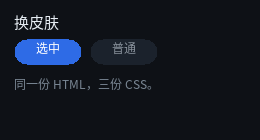
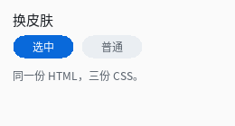
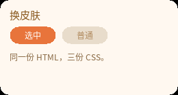

换皮肤



完整程序：example/06_theme/main.c
三张图是同一份 HTML，只有 CSS 不同。例程目录里就是三份 CSS：
example/06_theme/
index.html 结构（三套皮肤共用）
dark.css
light.css
warm.css
<!-- example/06_theme/index.html -->
<div id="root">
<div class="title">换皮肤</div>
<div class="row">
<div class="chip on">选中</div>
<div class="chip">普通</div>
</div>
<div class="body">同一份 HTML，三份 CSS。</div>
</div>
/* 结构只写一次：换皮肤就是换这一个文件名 */
QLUIDoc *doc = ex_load_ui("index.html", "dark.css");
为什么这很便宜
编译一次是毫秒级的，而且产物就是静态表 —— 换完皮肤之后，运行期的性能与 "构建期编译出来的"完全一样：没有解析、没有匹配、没有额外的间接层。
所以"换皮肤"的成本 = 一次编译。可以直接这么写：
void apply_theme(const char *css_path)
{
QLUIDoc *doc = ex_load_ui("index.html", css_path); /* 结构每次都一样 */
if (doc == NULL) {
fprintf(stderr, "皮肤编译失败，保留旧皮肤：%s\n",
ql_ui_text_last_error());
return; /* ← 失败就不换，别半个正确 */
}
QLUIRoot *ui = ql_ui_build(doc);
/* ... 用新的 ui 替换旧的（旧的 ql_ui_free + ql_ui_doc_free） */
}
失败时保留旧皮肤是这个例程刻意示范的：明确失败优于半个正确。
三套主题的差别只有变量
看三份 CSS，它们的结构完全一样，只有颜色和圆角不同：
| 深色 | 浅色 | 暖色 | |
|---|---|---|---|
| 背景 | #0E1116 |
#FAFAFA |
#241A12 |
| 标题 | #E6EDF3 |
#1F2328 |
#FFE0B2 |
| 选中态 | #2E6BE6 |
#0969DA |
#E8743B |
真做产品时，用 CSS 变量 + 一次替换最省事：
:root { --accent: #2E6BE6; --bg: #0E1116; }
.btn { background-color: var(--accent); }
.page { background-color: var(--bg); }
var() 在构建期就被替换成具体值（可以带 fallback：var(--x, 3px)），
运行期一个变量都不留 —— 所以它和"编译期定死"的设计并不冲突。
换主题的两种做法：
- 每个主题一份
.css，构建时选一份（体积最省）； - 保持同一份 CSS，只在
:root里改值（维护最省），重新跑一次qltext。
运行期切主题不在支持范围：
QLUIDoc.styles是const QLUIStyle *， 样式表是只读的静态数据 —— 这正是"编译期定死"的前提。 真要换主题，就准备两份 doc（各自一份 CSS），运行时ql_ui_doc_free()+ql_ui_load_file()换一份（例程example_06_theme就是把同一份 HTML 配三份 CSS 各画一张）。想"运行期只改几个颜色"的话，最省事的是给那几处单独建节点，改它自己的
background-color—— 但那也不是改样式表，是把颜色写进绘制调用。
用外部 CSS 文件
例程支持直接吃一份 CSS：
./build/example/example_06_theme my.css
试着自己改一份 my.css（把 example/06_theme/dark.css 抄一份改颜色），
跑一下 —— 三分钟内你就能体会到"改界面不用重编译"。
存成 .qlui 缓存
编译结果可以再序列化成二进制，下次直接加载，连解析都省了：
ql_ui_doc_save(doc, "theme-dark.qlui"); /* 一次 */
/* 之后每次启动 */
QLUIDoc *doc = ql_ui_load_file("theme-dark.qlui");
.qlui 里就是那份静态数据 + 头部校验（magic / 版本 / 结构体大小 / FNV-1a 校验和）。
损坏的文件会被明确拒绝（7 类损坏输入都有测试），不会画出一半。
注意：
.qlui不是跨架构可移植的 —— 结构体布局随 ABI 变化。它是"同机缓存"， 不是"发布格式"。发布还是走构建期编译。
皮肤与"构建期编译"怎么配合
推荐的做法是两者都用：
| 用途 | 路径 |
|---|---|
| 界面结构（HTML） | 构建期编译进二进制（零成本） |
| 可选皮肤（CSS） | 运行期编译 + .qlui 缓存 |
| 开发调试 | 运行期编译，改完重启就看 |
因为 ql_ui_load_text 与构建期 qltext 走的是同一段代码，两条路径产出的数据逐字节相同，可以随便混。